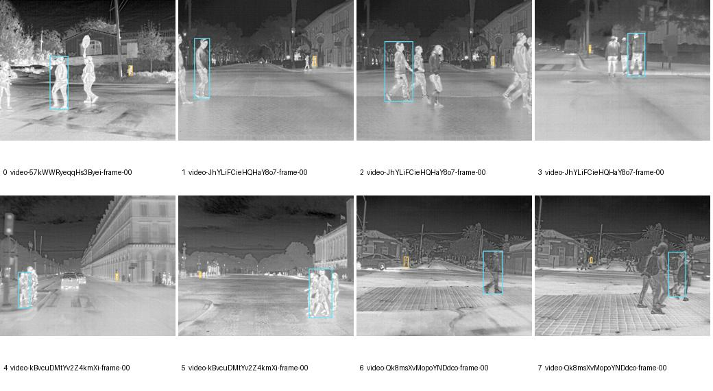
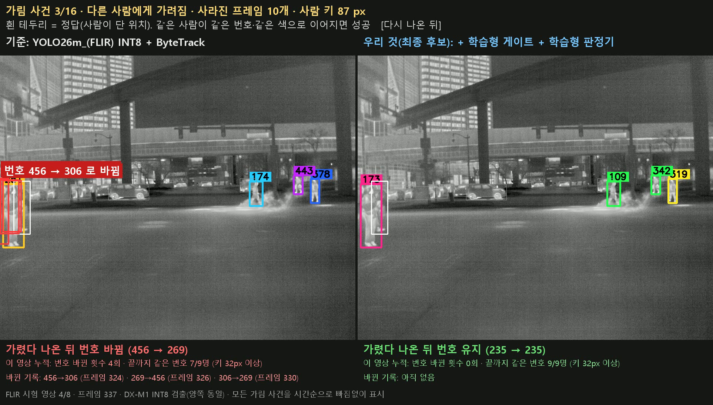

내가 맡은 일: 학습에서 짐벌 제어까지
01 · 열화상 검출 학습

10,491장
데이터 규모와 FT·LoRA를 비교하고 YOLO26m을 학습
02 · 실제 운영 화면 확인

검출 · ID 추적
모델 출력을 운영 화면에서 확인
캡처: TMOT 녹화 재생
03 · 짐벌 제어·시험

4회 → 1회
상하 시험에서 정지 후 방향 반전 비교
조건별 각 1회 · 가로 지표 악화도 관측

데이터 규모와 FT·LoRA를 비교하고 YOLO26m을 학습
모델 출력을 운영 화면에서 확인
캡처: TMOT 녹화 재생
상하 시험에서 정지 후 방향 반전 비교
조건별 각 1회 · 가로 지표 악화도 관측
가시광 사전학습 가중치에서 출발해 열화상 검출로 적응시킨 기본 실험. 소형 객체 후속 재학습 설정은 다음 장에 구분했다.

열화상 화질을 흉내 낸 변환도 사용. 각 증강의 단독 효과는 자세 모델에서 따로 검증하지 못했다.


자동 후보 확인 → 박스·ID 수정 → 부위와 가림 상태 검토 → 저장. 제공된 실제 작업 화면이며 선택 부위에는 ‘검수 필요’가 표시되어 있다.
이 두 프레임이 아래 집계의 학습 데이터에 포함됐는지와 부위 검수 완료 여부는 별도 확인이 필요하다.
상자 기준에 미달한 193명은 박스만 사용했다.
사진은 편집 과정의 예다. 화면 속 프레임이 집계에 포함되었거나 선택 부위가 검수 완료됐다는 뜻은 아니다.
가려진 몸을 포함하는 상자 기준을 통일하고 재검 오류 4.6%를 수정했다.
사진은 편집 과정의 예다. 기록에 나온 282장과 동일한 프레임인지 및 부위 검수 완료 여부는 확인되지 않았다.
실제 8090 화면 · TMOT 검증 영상 재생 · 11월 15일 캡처

별도 실카메라 녹화와 저장된 M1 출력 · 11월 6일
왼쪽과 오른쪽은 서로 다른 촬영·재생 기록. 8090 화면은 TMOT 재생 중이며 실제 짐벌 동시 구동을 증명하지 않음.


같은 M1 INT8 검출 결과를 사용한 16건 중 한 사례. 구성 선택에 사용한 영상이며 모든 가림에서 유지된다는 뜻은 아니다.